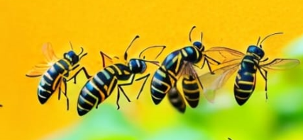
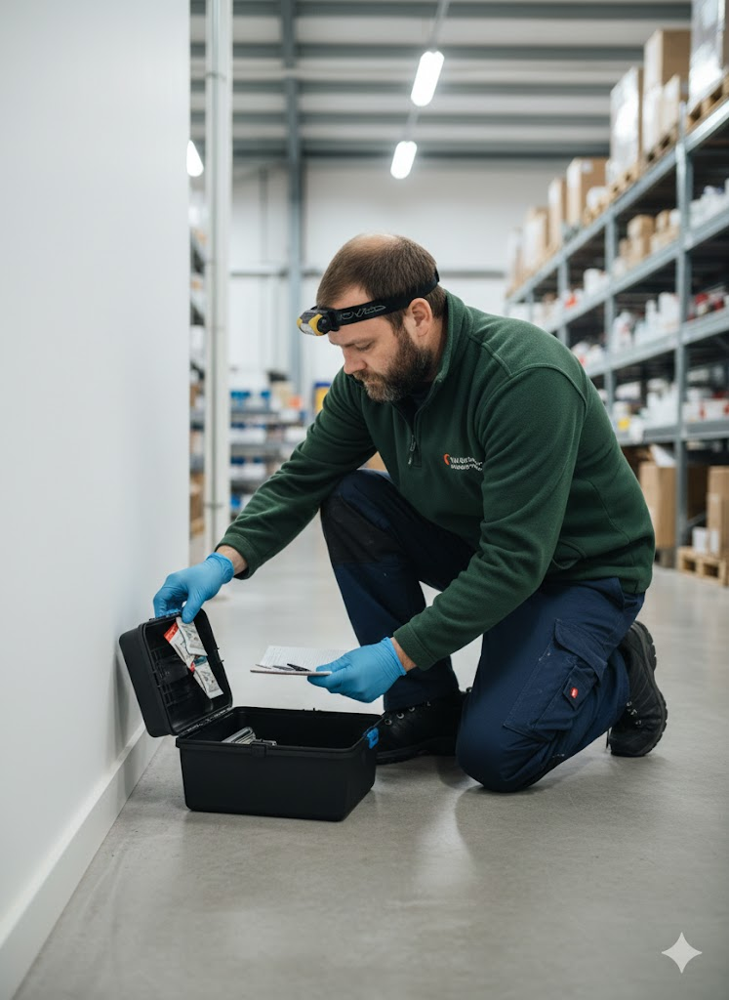

Hirwaun → Merthyr → Rhymney → Tredegar → Ebbw Vale → Brynmawr
→ See all 58 villages we cover along the A465
No-Poison Pest Control for Farms & Homes
Merthyr Tydfil • Rhymney • Ebbw Vale
Unlike council sprays or national chains, we use traditional traps – 100% safe for livestock, silage & families. Same-day response across Heads of the Valleys.
Call 07375 303124 – 24/7 EmergencyFamily-run Welsh pest control serving **Merthyr Tydfil, Rhymney, Ebbw Vale, Tredegar & the CF47 valleys**. We specialize in no-poison solutions for farms battling rats in barns or moles in paddocks – zero risk to your silage or cattle, unlike chemical-heavy rivals like Able/Hampton.
From wasp nests in Dowlais lofts to rodent issues in Troedyrhiw homes, we're local (45 mins from most calls) and 24/7. DBS-checked, insured, and compliant for commercial audits – no downtime for your business.
Our Merthyr Services – Farm & Home Focus

Wasp Nest Removal
Same-day, safe removal in Rhymney lofts & Ebbw Vale gardens – no sprays near kids/pets.

Rat & Mouse Control
Traditional Fenn traps for barns/feed stores – silage-safe, poison-free for Tredegar farms.

Mole Catching
Duffus traps for valleys pastures – no gassing, 100% livestock-safe clearance.

Commercial Contracts
Audit-ready for factories/pubs in Merthyr – discreet, compliant, no interruptions.
"Rats in our Rhymney barn gone in 4 days – no poison near the silage. Local lads who know the valleys!"
— Dai Jones, farmer near Ebbw Vale
Coverage – Heads of the Valleys
→ Full list: See all 58 villages on the A465 Heads of the Valleys
07375 303124 – Free Quote Today
Frequently Asked Questions
Is your pest control safe for Merthyr farms?
Yes – 100% no-poison traps for rats/moles. Silage-safe, livestock-approved vs. council chemicals.
How quick is response in Rhymney/Ebbw Vale?
Same-day emergencies, 24/7 – we're valleys-based, not national.
Do you handle commercial in CF47?
Absolutely – audit-compliant for pubs/factories, discreet & no downtime.